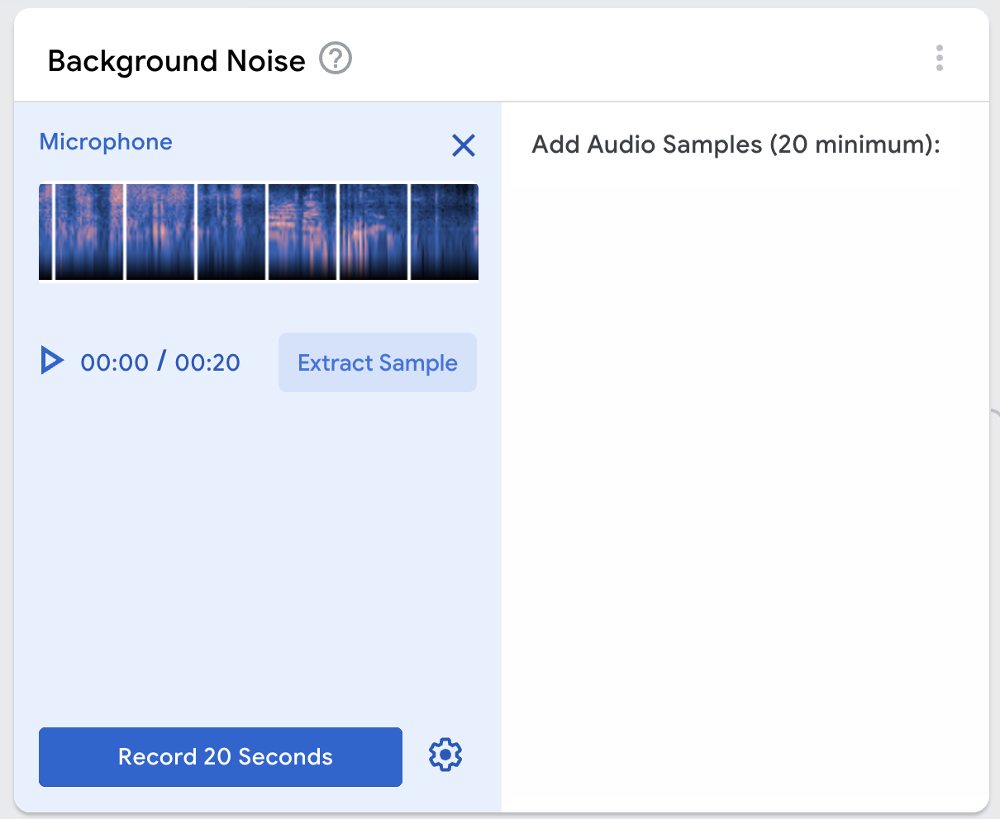
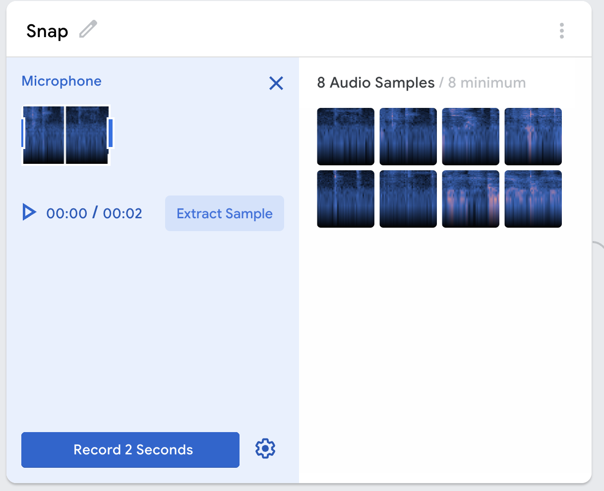
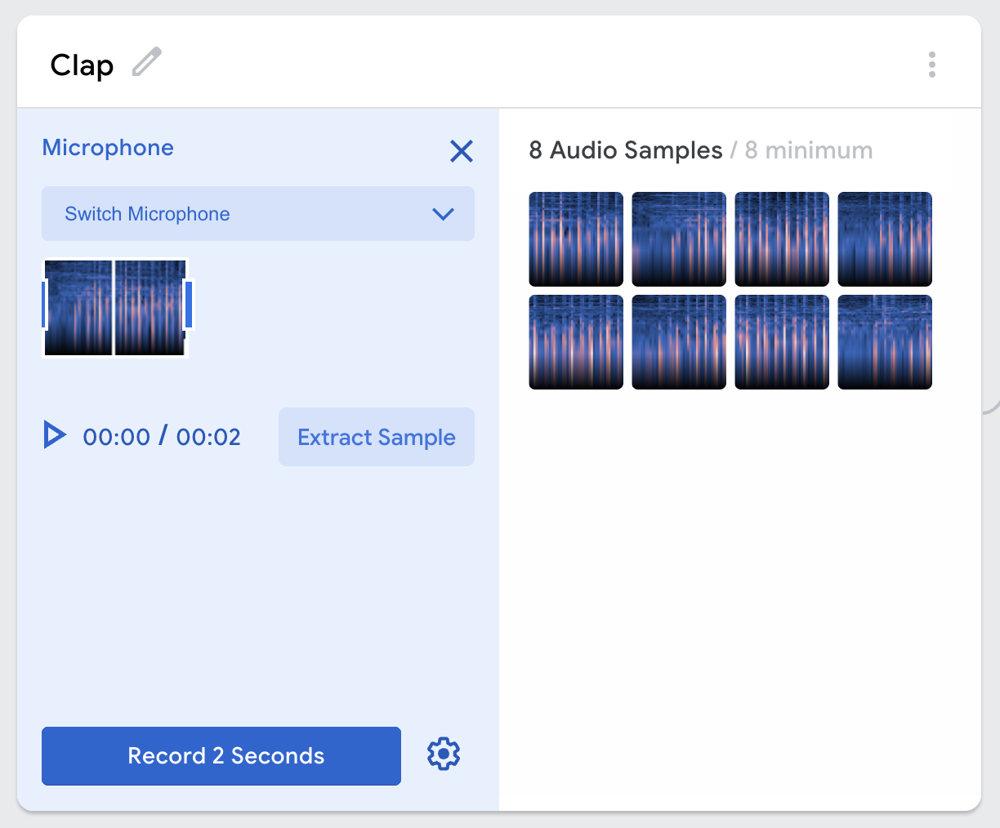
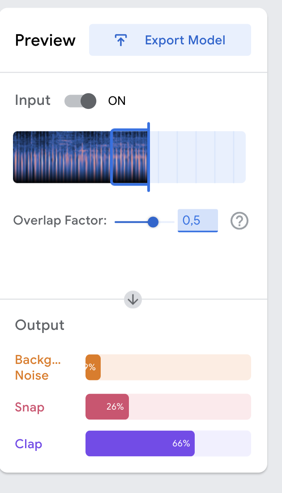

There is a really cool website that allows you to make a really really simple machine learning program. It's called Teachable Machine. It's really easy to use, and it's a great way to get started with machine learning.
We are going to be going over the basics of how to use Teachable Machine, and how to make a really simple object recognition program.
Go to Teachable Machine and click on the "Get Started" button.
Select "Audio Project"
This audio capability is really cool, you are able to figure out what a sound it. It can for exmaple determine the difference between a clap and a snap, or maybe different types of music, or instruments. It is just a simple classification problem.
You are first going to record 20 seconds of background noise.
Then you are going to record 4 clips of you repeatly snapping or whatever you are wanting to identify. For the people paying attention, you notice that there is a minimun of 8 recordings. You need 4 and then click "Extract Samples" to get 2 for that recording.
Once you have the first one, get the second one recorded doing the same things. Do it four time as well.
Click the "Train" button, and then wait for it to finish. This is going to take a while, so be patient. The page may stop responding, this can be disregarded.
Once it is trainined, you will be able to use the 'Preview" section to be able to see your model working. You should be able to see a bargraph about the prediction of what is currently happning.
Since I was not in a quiet enough room writhing this my examples are not really good since there was too much background noise.
Here is an example if it knowing when I was clapping:
Congrats! You've made your first machine learning program! This is the first of many, this is only the audio recognition part. There are many other interesting things that you are able to do with machine learning. I hope this peaks your interests.
If there are any edits that you would like to request to be added to this, please submit them in an issue in the GitHub or you can send an email to sysadmin@silverflag.net